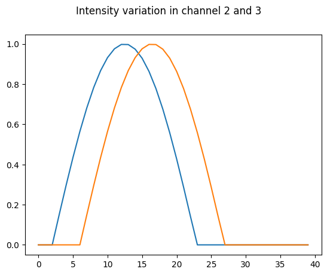

Synthetic data simulation#
This notebook generates a dataset of a synthetic cell acquired in 3 channels and exported in h5 format. The movie has 40 frames. The top edge of the cell moves out in frames 0-20 and backwards in frames 20-40. The first channel represents a segmentation channel. The two others contain a gradient of intensity with max at the top edge. That signal increases and decreases over ~20 frames but has a shift of 4 frames between channel #2 and #3.
import numpy as np
import matplotlib.pyplot as plt
from scipy.ndimage import binary_fill_holes
from morphodynamics.splineutils import splevper, spline_to_param_image, fit_spline
import skimage.filters
import skimage.util
import ipywidgets as ipw
import h5py
from pathlib import Path
#%matplotlib widget
np.random.seed(42)
The simulated data are generated by starting with a circular cell and to progressively deform it. Random displacement is applied on all points. Additionally a constant positive/negative force is applied on the top region of the cell, making it expand and retract.
width = 100
height = 100
radius = 10
position = np.array([50,50])
circle = position+ np.array([[radius*np.cos(x), radius*np.sin(x)] for x in np.arange(0,2*np.pi, 0.01)])
circle_or = circle.copy()
dist_from_point = np.array([np.linalg.norm(x-circle[0,:]) for x in circle])
dist_from_point[dist_from_point < 10] = 0
steps = 40
image_stack = np.zeros((steps, height, width))
grad_image = (np.ones((height, width))*np.arange(0,width)).T
grad_image = grad_image/width
vert_stack = grad_image*np.ones((steps, height, width))
vert_stack = np.rollaxis(vert_stack,0,3)
wave1 = np.sin(-0.3+0.15*np.arange(0,steps))
wave1[wave1<0]=0
wave2 = np.sin(-0.9+0.15*np.arange(0,steps))
wave2[wave2<0]=0
vert_stack1 = vert_stack * wave1
vert_stack2 = vert_stack * wave2
vert_stack1 = np.rollaxis(vert_stack1,2,0)
vert_stack2 = np.rollaxis(vert_stack2,2,0)
for i in range(steps):
if i<20:
fact = -0.5
else:
fact = 0.5
move_noise = np.random.normal(loc=0,scale=0.5, size=circle.shape)
move_noise[:,0] += fact*dist_from_point
circle = circle + 0.1*move_noise
circle_s, _ = fit_spline(circle, 100)
rasterized = spline_to_param_image(1000, (100,100), circle_s, deltat=0)
image = binary_fill_holes(rasterized > -1).astype(np.uint8)
image_stack[i,:,:] = image
temp = vert_stack1[i,:,:]
temp[image==0] =0
temp = vert_stack2[i,:,:]
temp[image==0] =0
#vert_stack1[image==0] =0
fig, ax = plt.subplots()
plt.plot(wave1)
plt.plot(wave2)
fig.suptitle('Intensity variation in channel 2 and 3');

# make stacks microscopy-like by blurring and adding noise.
im_stack_gauss = skimage.filters.gaussian(image_stack, preserve_range=True)
im_stack_noise = skimage.util.random_noise(im_stack_gauss,'gaussian')
im_stack_noise = skimage.util.img_as_ubyte(im_stack_noise)
signal1_gauss = skimage.filters.gaussian(vert_stack1, preserve_range=True)
signal1_noise = skimage.util.random_noise(signal1_gauss,'gaussian')
signal1_noise = skimage.util.img_as_ubyte(signal1_noise)
signal2_gauss = skimage.filters.gaussian(vert_stack2, preserve_range=True)
signal2_noise = skimage.util.random_noise(signal2_gauss,'gaussian')
signal2_noise = skimage.util.img_as_ubyte(signal2_noise)
def update_fig(ind):
#im.set_array(im_stack_noise[ind,:,:])
im.set_array(signal1_noise[ind,:,:])
fig, ax = plt.subplots()
#im = ax.imshow(im_stack_noise[0,:,:], cmap = 'gray')
im = ax.imshow(signal1_noise[0,:,:], cmap = 'gray')
ipw.HBox([ipw.interactive(update_fig, ind=ipw.IntSlider(0,0,39))])
Export as H5#
# export data as h5 files
main_folder = Path('./data')
h5_name = main_folder.joinpath('synth_ch1.h5')
with h5py.File(h5_name, "w") as f_out:
dset = f_out.create_dataset("volume", data=im_stack_noise, chunks=True, compression="gzip", compression_opts=1)
main_folder = Path('./data')
h5_name = main_folder.joinpath('synth_ch2.h5')
with h5py.File(h5_name, "w") as f_out:
dset = f_out.create_dataset("volume", data=signal1_noise, chunks=True, compression="gzip", compression_opts=1)
main_folder = Path('./data')
h5_name = main_folder.joinpath('synth_ch3.h5')
with h5py.File(h5_name, "w") as f_out:
dset = f_out.create_dataset("volume", data=signal2_noise, chunks=True, compression="gzip", compression_opts=1)
Export as zarr#
import zarr
im_stack_noise.shape
(40, 100, 100)
full_stack = np.array([im_stack_noise, signal1_noise, signal2_noise])
full_stack.shape
(3, 40, 100, 100)
z1 = zarr.open('synthetic.zarr', mode='w', shape=full_stack.shape, chunks=(3,1,height, width))
z1[:] = full_stack
import napari
viewer = napari.Viewer()
viewer.open('synthetic.zarr/')
[<Image layer 'Image' at 0x28f4ada90>]